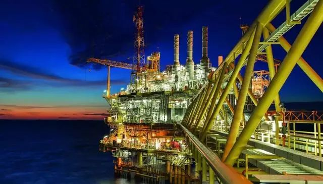

新冠肺炎｜值得严重关注的2019年12月31日-资讯-知识分子
原文链接 备份链接 - 编者按 - 回顾新冠肺炎疫情，可以看到一个关键日期，2019年12月31日。这一天，国家卫健委专家组在武汉开会，香港提出对疫情的关注。如果这天会议确定要采取行动，包括不宣传但行动的外松内紧，而不是掉以轻心，可能对 …

2014年油价暴跌以来，全球石油行业的日子就不好过。2018年发生了价格过山车，2019年相对是个好年份， 2020年看来必须在需求不振和价格疲软的困境中艰难求生

图/IC
*** 文 | 王能全***
2019年以来，国际石油市场有一个令人称奇的现象：品质最低的阿曼原油的价格不但高过了WTI原油，更有114个交易日高过了布伦特原油。2020年1月，这一现象仍在持续，但是1月31日，阿曼原油的价格首次低于布伦特。至2月20日的14个交易日中，有9个交易日阿曼原油的价格低于布伦特原油，占交易天数的64.29%。
*这是因为从1月底开始，新型冠状病毒肺炎疫情爆发并演变成全球性的公共卫生事件，引发国际石油价格持续走低，并带来了作为远东市场标杆的阿曼原油价格回归正常和理性。*
*其中的关键因素，是中国交通运输用油的大降，导致进口量大降，而以阿曼原油为标杆价格的中东原油，正是中国石油进口的主要来源。*
中国是世界第二大石油消费国，第一大石油进口国，是近年来国际石油市场消费增量的主要来源，2019年世界石油消费增量中的三分之二以上来自于中国。
2019年，全球石油消费由2018年的9930万桶/天增长到10026万桶/天，每天增加的量为96万桶。同期，中国的石油消费由2018年的1297万桶/天，增长到2019年的1361万桶/天，每天增加64万桶。
近年来，中国国内石油产量增长乏力，2019年国内石油产量仅比2018年增加10万桶/天，从而导致2019年中国石油消费增量中的98.97%必须靠进口来补充。根据欧佩克的统计，2019年，中国平均每天原油进口的数量为1020万桶/天，比2018年增长了90万桶/天。
交通运输是中国油品消费的大头。根据国际能源署的统计，在2019年中国每天消费的1360.7万桶石油产品中，车用汽油为311.2万桶/天，占全部油品消量的22.87%；航空燃料为85.8万桶/天，占比6.31%；柴油为355.3万桶/天，占比26.11%。三项合计为752.3万桶/天，占到全部油品消费的55.29%。
目前，全世界一次能源消费总量约为140亿吨油当量。从终端使用情况看，工业行业（包括非燃烧使用）消费了全球能源消费的约一半，其次是建筑行业消费了29%，第三是交通运输消费了21%。在交通运输行业消费的全部能源中，石油所占比重高达94%，是交通运输行业的绝对主导能源来源。
2003年，由液化石油气、航空燃料、汽油和柴油等构成的运输用燃料，中国占全球的比例为5%，2019年增长到12%。中国的交通运输的停顿，对全球石油市场的冲击立竿见影。
*机构和专家们对新冠肺炎疫情给全球经济影响基本一致的看法是，由于人员流动受限和生产停滞，带来了全球供应链的混乱，抑制了全球贸易，投资者和消费者信心恶化，短期世界经济增长肯定将放缓。*
*作为现代社会的血液，石油消费直接受制于经济活动。**新冠肺炎疫情发生后，世界主要能源机构纷纷下调了2020年全球石油消费增长的预期。*
在2月12日出版的2020年第2期《月度石油市场报告》中，欧佩克认为2020年全球经济增长将下降0.1个百分点，全年增长为3%，全球石油消费增长为99万桶/天，比1月份的估计每天下调了20万桶。
在2月11日出版的2020年第2期《短期能源展望》中，美国能源信息署认为，2020年全球石油消费将比2019年增长100万桶/天，比1月份的预测大幅下调37.8万桶/天。
最为悲观的是国际能源署。在其最新出版的2020年2月份《石油市场报告》中，国际能源署认为，2020年全球石油消费仅增长82.5万桶/天，比年初的预测大幅下调36.5万桶/天，是2011年以来最低的增长速度。国际能源署认为，2020年第一季度，全球石油消费量年化计算后每天会下降43.5万桶，是10多年来第一次全球性的石油消费下降。
*新冠肺炎疫情对中国石油消费的影响最大，下调2020年中国石油消费增长是所有机构的共识。*欧佩克认为，2019年中国石油消费增长了35万桶/天，2020年预计仅增长23万桶/天，由2019年的增长2.77%下降到2020年仅增长1.74%。美国能源信息署认为，2020年中国石油消费增量将减少19万桶/天，其中第一季度石油消费为1470万桶/天，第二季度为1500万桶/天，分别比年初的预测减少30万桶/天和20万桶/天。2020年第1季度中国的原油加工量将减少110万桶/天，年化计算后为减少50万桶/天。
新冠肺炎疫情发生后，由于油品的需求降至冰点，中国炼厂加工负荷大幅度下降，主力炼厂的加工负荷维持在70%左右，部分地方炼厂的加工负荷仅维持在30%，进口原油港口大量压船，中国周边港口已一罐难求，老旧油轮也用于储存原油。未经证实的消息称，中国已退回5000万桶进口原油。可以肯定，2020年第1季度，全球石油库存将大幅度增加，第2和第3季度国际石油市场将面临持续的库存消化压力。
2014年价格暴跌以来，持续的供大于求是国际石油市场的常态。，欧佩克除自行减产外，还联合俄罗斯等10个世界主要石油生产国共同减产，催生了欧佩克+。不断加码限制石油产量以求稳定国际石油市场，既是欧佩克和俄罗斯等世界主要石油生产国的主要任务，也是近年来国际石油市场的头号新闻。
目前，全球石油产量超过1亿桶/天，沙特阿拉伯等国手中仍有300万桶/天以上的剩余石油生产能力。新冠肺炎疫情发生后，面对需求不振，2月初欧佩克+技术委员会建议每天进一步消减60万桶原油的产量，为此沙特阿拉伯积极推动希望在2月份召开紧急会议讨论增加减产事宜，但由于俄罗斯的反对没有举行。3月初，欧佩克+部长级会议将举行例行会议，讨论减产问题。无论这次会议的结果如何，增大减产幅度以维持国际石油市场稳定，将是沙特阿拉伯、俄罗斯等世界主要石油生产国2020年必须面对的棘手议题。
就在新冠肺炎疫情最为严重的2月6日，国际货币基金组织（IMF）发布了《石油的未来和海湾国家地区的财政可持续性》的报告，其中的两大结论，引起舆论的普遍关注。
结论之一是，IMF认为，由于人口增长放缓，经济增长对石油依赖减少和长期全球经济增速预计放缓，全球石油需求在2041年左右触顶，日均为1.15亿桶的水平，而且如果能效显著提高或实施碳税，全球石油需求可能在2030年左右达峰。
结论之二是，至2018年底海湾国家累积的2万亿美元金融财富，在石油市场将发生重大转变的背景下在15年后耗尽，预计在2034年变为负值，这些国家将成为净借款国且所有的非石油财富也将在随后的十年内耗尽。
根据国际能源署的统计口径，当前全球的石油消费总量为1.0026亿桶/天，虽然从今天至2041年仍有20年的时间，但今天全球的石油消费总量仅比20年后的峰值少1454万桶/天。
作为偶发事件，新冠肺炎疫情引发的全球石油消费增长放缓虽然是短暂的，但为IMF有关石油消费峰值研究报告，提供了绝佳的注脚。*对于石油生产国来说，面对石油出口和收入的突然下降，要思考并采取措施维持本国经济和社会的稳定；**对于石油消费国来说，面对消费急剧下降，必须增强自身的应变能力，维持石油化工行业和本国经济的稳定。*
2019-2020年冬季很快就将过去，但即将到来的春天和夏天，对于全球石油行业来说可能仍然是冬天。严重供过于求情况下，石油价格也将疲软，布伦特原油全年均价应该在65美元/桶以下，并有可能出现低于50美元/桶的低价位。
2014年价格暴跌以来，全球石油行业的日子就不好过。2018年发生了价格过山车，2019年相对是一个好年份，虽然有惊有险但最终波澜不惊，油价走出了一个不断上涨的曲线，但2020年看来必须在需求不振和价格疲软的困境中艰难求生。
作者为中化集团经济技术研究中心首席研究员，编辑：马克


责编 | 黄端 duanhuang@caijing.com.cn

原文链接 备份链接 - 编者按 - 回顾新冠肺炎疫情，可以看到一个关键日期，2019年12月31日。这一天，国家卫健委专家组在武汉开会，香港提出对疫情的关注。如果这天会议确定要采取行动，包括不宣传但行动的外松内紧，而不是掉以轻心，可能对 …
原文链接 备份链接 作者：孙梅欣 “ 线上医疗、云办公、远程教育等行业潜藏扩张机遇。 ” 随着2月中上旬企业陆续复工，疫情对商业地产的影响正在逐步展现。 戴德梁行近期的报告显示，针对近期疫情对中国经济的影响，牛津经济研究院(Oxford …
原文链接 备份链接 来源：雪球App，作者： 腾讯棱镜深网，（https://xueqiu.com/6718098612/141258935） @今日话题 《棱镜》作者 王晓 出品 | 棱镜·腾讯小满工作室 一直是银行业中最早披露年报的平 …
原文链接 备份链接 Photo by Serhii Maksymiv on Unsplash 记者：郑萃颖 “ 在2020年第一季度，预计疫情对调整后税息折旧及摊销前收益的影响在1000万美元至2000万美元。 ” 希尔顿集团近日发布 …
原文链接 备份链接 打开 导语：作为旅行社的老板，我欠我的老顾客们一个美好的假期，我希望他们能在2020年的岁末补上这份美好。 无论是飞来车祸还是天降瘟疫，都无法阻止我们的生活，滚滚向前。 我是荣荣，山东临沂一家旅行社的小老板，一个34岁 …